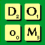

Rachel's Super MOO List
Miscellaneous MOOs
Go to the start of the list
Please e-mail me with additions, corrections, comments, and suggestions.
updated Friday, 10 August 2001
A | B | C | D | E | F | G | H | I | J | K | L | M | N | O | P | Q | R | S | T | U | V | W | X | Y | Z
MOO Listings A-C ||| MOO Listings D-G ||| MOO Listings H-O ||| MOO Listings P-Z
Educational MOOs ||| Foreign Language (ESL) MOOs ||| RPG MOOs ||| Social MOOsDevolutionMOO
3 March 00
devolution.net 2222
documentation
research
["Many online gamers wish to know more about programming, but can never manage to get on the staff of a game. Sound like you? Perhaps you'd like to take a step into devolutionMOO, where you don't need a staffing position to program. Come in and create fancy gadgets and gizmos, or just goof around."]Dreamwheels
shadowfax.rh.ncsu.edu 9000
documentation
[An Urban Fantasy based in the fictitious modern day city, Azington. It focuses on cooperative storytelling in a world where not everything is what it might seem to be.]EnviroMOO
avatar.phys-plant.utoledo.edu 5555
131.183.124.59 5555
documentation
[It is a multi-user virtual environment for promoting the real-time discussion of issues relating to Environmental Health and Safety. EnviroMOO is operated by The University of Toledo Safety and Health Office.]FooMOO
21 November 00
camel.ethereal.net 4500
documentation
other
[There is currently no theme. It is an environment for MOO programmers to write code that may be ported to other MOOs. It supports ANSI, MacMOOSE, etc.]KashaCVW
kasha.cvw.mud.org 8888
documentation * web gateway
research
["Based at Northeastern University in Boston, MA, the KashaCVW project is trying to build a virtual world based on MITRE's CVW project, which was originally developed for millitary use, but has since become an OpenSource program." It is themed as a floating city, completely autonomous from outside forces. Developers are all welcome to email Justin Richer to gain access to the MOO. It is accessable via standard MOO/MUD clients as well as the specialized CVW client.]MarlDOoM
www.math.utoronto.ca 7777
128.100.68.4 7777
documentation * DOoM FAQ
other
[It is a public crossword games server. A DOoM is a Distributed Object-oriented Mud, which was created to replace ScrabbleMOO.]Meridian
meridian.moo.mud.org 7777
documentation
other
[Themes of virtual travel and cultural exchange. Can be thought of as a global village where people represent the essential "flavors" of real places they know well.]MirrorMOO
mirror.moo.mud.org 8889
documentation
research
[It "is a forum for research and development. This MOO is running a simulation of the LambdaMOO server called LPMOO, based on DGD. The chosen theme is Alice's Wonderland; however, the theme is not the primary focus. An effort is being made to combine the positive contributions of both the MOO and LPmud communities."]
as of 4 July 2001Res Rocket Surfer
rocket.resrocket.com 1111
documentation
[Join a world wide jam session, where you can groove with musicians from Oslo, San Francisco, and Notting Hill. Or if you're looking for comments on your freshly mixed MIDI files, upload them to your locker on the Res Rocket web site for other others to browse. Based out of a studio in Notting Hill, west London, Internet band Res Rocket Surfer developed this world and the associated web site. They invite musicians to hook up their MIDIs to jam in real time, using the Distributed Realtime Groove Network realtime jamming DRGN software. While the realtime jamming takes place on the web realtime chat takes place on their MOO. On the web, go to the control room to sample some tracks and add comments, or go the ResRocket Backstage Bar on the MOO to hang and chat.]Rupert
rupert.twyst.org 9040
documentation
other
[Based on Douglas Adams' The Hitchhiker's Guide to the Galaxy.]
ZenMOO
zenmoo.zennet.com 7777
documentation or documentation * an ftp site with further information * the Zen Guide * the ZenMOO FAQ * Web access * JAVA interface
other
[A Zen MOO with strict Zen guidelines. No one is allowed to talk about non-Zen things. Run by PC4.]
MOO Listings A-C ||| MOO Listings D-G
MOO Listings H-O ||| MOO Listings P-ZEducational MOOs ||| Foreign Language (ESL) MOOs
RPG MOOs ||| Social MOOs